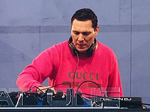

Tijs Michiel Verwest (Breda, Países Bajos, 17 de enero de 1969) es un DJ y productor neerlandés. A pesar de que ha utilizado muchos alias en el pasado, es más conocido por su trabajo como DJ Tiësto o simplemente como Tiësto, un alias que proviene de su sobrenombre de la infancia.
Ha lanzado cinco álbumes de estudio, cuatro álbumes recopilatorios, veinticuatro extended play, nueve álbumes de video. En busca de su estilo personal, Tiësto trabajó con Armin van Buuren y Ferry Corsten. Y luego decidió que era tiempo para centrarse en su trabajo personal como disc jockey. La fama de Tiësto comenzó a aumentar a finales de 1990 después de su presentación en ID&T Innercity party (Live at Innercity: Amsterdam RAI), y continuó en la década de 2000 después de su conciertos llamados "Tiësto Solo", de seis horas de duración. Sus últimos tres lanzamientos larga duración rompió la marca de 70 000 copias vendidas y en el 2003, el álbum de mezclas Nyana supero las 87,000, según Nielsen SoundScan en 2008.
| Fecha | Lugar | Ubicación |
|---|---|---|
| OCT 24 THU | Expo Tel Aviv | Tel Aviv-yafo, Israel |
| OCT 31 THU | Premier Nightclub | Atlantic City, NJ, United States |
| NOV 1 FRI | Echostage | Washington, DC, United States |
| NOV 2 SAT | Omnia Nightclub | Las Vegas, NV, United States |
| NOV 2 SAT | DAER Dayclub | Fort Lauderdale, FL, United States |
| NOV 23 SAT | EDC Guangdong 2019 | Zhuhai, China |
| NOV 30 SAT | DLDK Poland | Gdańsk, Poland |
| DEC 14 SAT | club chroma | Jung-gu, South Korea |
| DEC 28 SAT | Contact Winter Music Festival | Vancouver, Canada |
| DEC 30 MON | Hakkasan Las Vegas Nightclub | Las Vegas, NV, United States |